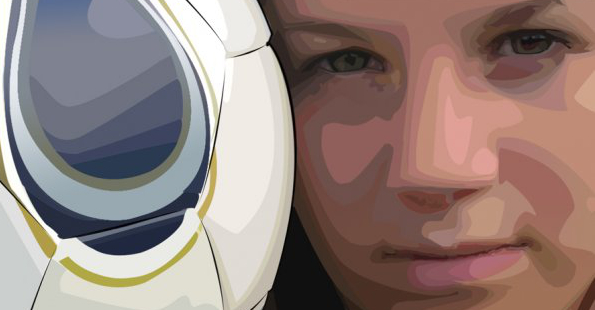

This is an example of a rotoscope technique where I was given a picture and
asked to re draw it.
This is probably the best example of what I can do as a
designer because this takes many different types of skills
and techniques to
achieve this and make it look like the picture.